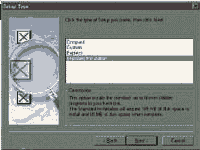
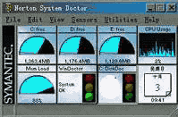
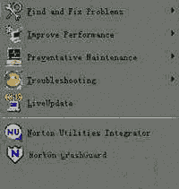
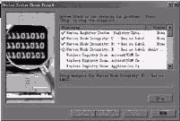
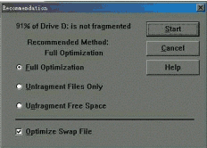
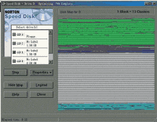
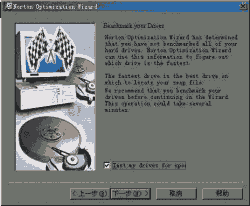
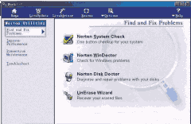

|
|
| 当前位置：电脑报电子版 > 1999 年 > 41 期 > 软件世界 > 三头六臂NortonUtillites2000工具箱 |
| 《 三头六臂NortonUtillites2000工具箱 》 |
| Norton Utillites（诺顿工具箱）是由美国Symantec公司开发的一套个人计算机实用工具集成软件。它集磁盘编辑、磁盘诊断与修复、系统优化、系统性能测试等多种功能于一身，微软的系统维护程序与它相比，简直就是小儿科了。早在DOS时代它的名气就非常大，被称为系统优化大师和系统的保护神。从DOS下的80版到Windows95后的30版，到目前最新的2000版，都是许多“玩”电脑者的必用软件。下面我们就来详解Norton Utillites 2000（以下简称NU2000）的各个功能。 注意：Norton Utillites对中文Windows的操作系统的支持非常不好，有时甚至会引起一些莫名其妙的问题，因此使用该软件必须要有一定的电脑使用经验，至少要会自己重新安装操作系统。另外，如果有重要资料，请先备份。 一、安装 运行安装文件Setupexe，鼠标点击“Next”，然后选取安装路径，再按“Next”会出现四个安装设置选项（图1）。系统默认是Standard Installation（标准安装），但较浪费硬盘空间（需要105MB），你可以选择Custom（自定义安装部件）、Compact（最小化安装）、Express（类似标准安装）。以后就一路按“Next”就行了。二、启动 在安装后重新启动电脑，在桌面上会出现一个像放大镜一样的NU2000的快捷启动图标。用鼠标指向“我的电脑”图标，按右键，你会发现右键菜单多出了一个“System Information”（显示系统信息）项。另外在任务栏上还有两个图标（图2），盾牌形状的是“Crash Guard”（防死机卫士），红绿灯标志的是“Norton System Doctor”（系统医生），红灯亮表示系统有问题。NU2000主要通过这些图标和菜单启动，也可以从开始菜单的程序组中启动程序。三、防止死机 先来说说防死机卫士，它每次在你的电脑启动时就常驻于后台。点击任务栏中的图标打开它，可发现有“Freeze check”和“Setting”项。当运行的程序遇问题，它就会弹出个对话窗口，告诉你该程序有错或被病毒感染，你可以选择“Revive”（复活程序）、或是“Teminate”（终止程序），这样就达到了防死机作用。四、系统医生主界面 这里我们介绍一下“Norton system doctor”系统医生的主界面（图3，可点击任务栏的图标打开）。“Sensors”（传感器）菜单可打开设置界面中的系统监视窗口（如图3的小窗口），通过这些窗口，可以监视硬盘空间、CPU利用率、内存状况、系统当前是否正常、日历等。我们可以根据需要，在“Sensors”菜单中随意添加监视项目。通过这个监视窗口，我们可以相当清楚地了解系统运作的情况。如果鼠标点选一个小窗口，通过右键菜单可以设置该监视项目的属性，也可以用热键“Alt＋Enter”。“Utillites”菜单下的选项就是我们下面要介绍的重要工具。 五、重要工具 Norton Utillites除了上面两个监视程序外，还有六大类工具（图4）。1．“Find and Fix Problems”（错误修复） 它包括“Nnorton System Check”（系统检测）、“Norton Windoctor”（Windows医生）、“Norton Diskdoctor”（磁盘医生，常说为NDD）、“Unrase Winzard”（恢复删除文件向导）。 “Norton System Check”（图5）可以对Windows注册表、系统文件等进行检测，有四个检测选项，选择好后在按“Next”即可进行检测，检测完毕，报告你发现了多少错误，并且错误是分等级的，一般是中等（Medium），高等（High）很少。在界面中点击“Repair All”来进行修复，如你不闲麻烦，也可一项一项修复，看红叉变绿叉，使系统达到最佳状态。 “Norton Windoctor”与上面项差不多。 “Norton Diskdoctor”，磁盘医生NDD，是著名的磁盘工具。功能可不简单，不管是软盘还是硬盘，只要有错大都能够修复，非常方便。笔者的几张坏了的软盘，就是靠它修复的。它可以把坏了的簇的数据移到别的簇，并在坏了的簇上标记。据说它还修复好过被CIH破坏的硬盘。 “Norton Unrase Winzard”可以帮助你将以前删除的文件恢复，即使你清空回收站也常常可以收回，但它有时间限制，删除时间长的文件是恢复不了的。 2．“Improve Performance”（提高性能） 它包括“Speed Disk”（磁盘加速）和“Norton Optimization Wizard”（诺顿优化向导）。 “Speed Disk”（磁盘加速）工具比Win9X自带的磁盘扫描与碎片整理好用多了，它有“Unfragment Files Only”（仅是优化受损文件）等三种优化方式（图6）。一般选择“Full Optimization”（全面优化）。它自动扫描磁盘，然后报告你的磁盘情况，当空间完整率低于90％时，就提醒你就该整理磁盘了。用它整理后，用“Safe Clean UtillitesⅡ”的磁盘探幽来查看磁盘效率，提高非常明显，以前用Win9X磁盘扫描与碎片整理，效率也不过就是98％，而现在则达到了110％左右，真是难以置信（图7）。 注意：你的磁盘分区格式最好是FAT32。另外，如果你的磁盘有问题，程序会提示你先运行NDD。 “Norton Optimization Wizard”（诺顿优化向导）很像Win9X中的系统维护向导（图8），可以使Win9X系统运行得更快，因为该向导在分析系统的基础上进一步优化注册表与交换文件（Swap Files），达到优化系统的目的。操作上只要一路按“Next”按钮就行了。最后按“Reboot”重新启动电脑，然后开始进行如下过程：启动“Speed Disk”整理C盘；在C盘上建立一个交换文件Win386swp；在C盘上建立一个映像文件Imagedat。到此，所有操作结束。 3．“Preventative Maintenance”（预防性维护） 提供两个选项包括制作急救盘和磁盘映像文件。 4．“Trouble Shooting”对系统硬件进行检测 5．“Live update Norton提供在线升级 6．“Norton Utilities Integrator”工具列表 这里列出了本文前后所介绍的各个工具，也就是诺顿所有可执行的功能项（图9），框中左面栏中分“Find and Fix Problems”、“Improve Performance”、“Preventative Maintenance”、“Troubleshoot”四大方面，每一部分都有相应的功能项。这个界面可以从开始菜单中启动。一般情况下，可以从“System Doctor”下的“Utilities”菜单项进行系统维护的。可随个人习惯而定。 六、完结篇 Norton Utillites 2000是一个商业软件（图10），该软件目前还没有中文简体版本发售。可以使用英文版本来解渴。该软件的试用版下载地址为http:∥wwwsymantecstorecom/Pages/TBYB/index.html。使用此软件推荐配置为：奔腾200MHz、32MB内存（最好是64MB）、32GB硬盘以上。 另外，诺顿公司还出了一个Norton System Works2000，这是一个工具套装，集成了诺顿的Norton Utillites、Ghost、Crashguard、Cleansweep、Antivirus等五大著名工具。由于该软件内中大有乾坤，再加上篇幅的限制，故不能仅用一篇文章就讲得面面俱到。 (陕西 高杲) |
| 下载本期推荐软件 | 页 首 |
| 《电脑报》版权所有，电脑报网站编辑部设计制作发布 |